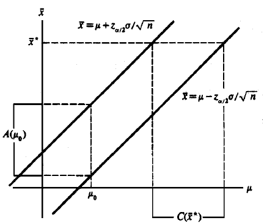
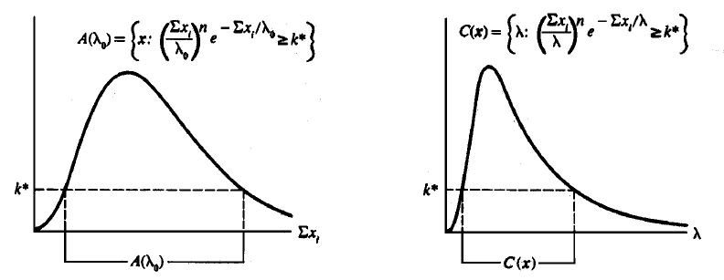
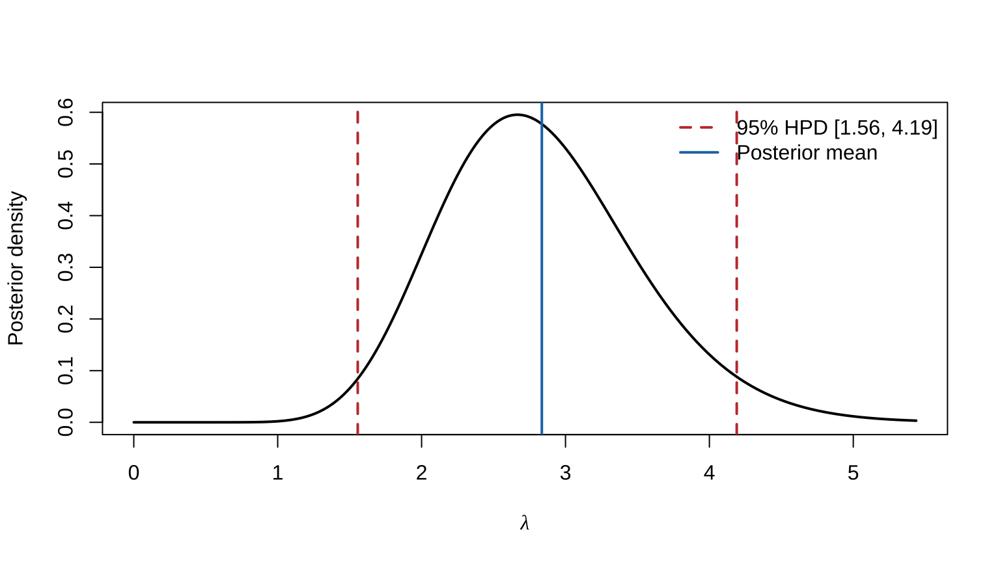

Chapter 9 Interval Estimation
This chapter corresponds to chap-9.tex, its three LaTeX fragments, and HPD_case.R. It covers confidence intervals, test inversion, pivots, Bayesian credible sets, interval length and coverage, and highest-posterior-density regions. All source figures are retained; the HPD code is made reproducible without an additional MCMC package.
9.1 Interval estimators, coverage, and confidence coefficient
Definition 9.1 An interval estimator of a real parameter \(\theta\) is a pair of sample functions \(L(\mathbf X),U(\mathbf X)\) with \(L(\mathbf x)\le U(\mathbf x)\). After observing \(\mathbf x\), report \([L(\mathbf x),U(\mathbf x)]\).
Definition 9.2 The coverage probability is \[P_\theta\{L(\mathbf X)\le\theta\le U(\mathbf X)\},\] usually a function of \(\theta\). The confidence coefficient is its infimum over \(\Theta\).
9.2 Inverting hypothesis tests
Theorem 9.1 For each \(\theta_0\), let \(A(\theta_0)\) be the acceptance region of a level \(\alpha\) test of \(H_0:\theta=\theta_0\). Then \[\mathcal C(\mathbf x)=\{\theta_0:\mathbf x\in A(\theta_0)\}\] is a confidence set with coverage at least \(1-\alpha\). Conversely, a confidence set defines level \(\alpha\) acceptance regions by \(A(\theta_0)=\{\mathbf x:\theta_0\in\mathcal C(\mathbf x)\}\).
Example 9.1 If \(X_i\sim N(\mu,\sigma^2)\) with known \(\sigma\), the two-sided level \(\alpha\) test accepts \(H_0:\mu=\mu_0\) when \[|\bar X-\mu_0|\le z_{\alpha/2}\frac{\sigma}{\sqrt n}.\] Inverting in \(\mu_0\) gives \[\left[\bar X-z_{\alpha/2}\frac{\sigma}{\sqrt n}, \bar X+z_{\alpha/2}\frac{\sigma}{\sqrt n}\right].\]

Figure 9.1: Source diagram relating acceptance regions and confidence intervals
9.3 Inverting an exponential-mean LRT
For exponential observations with mean (scale) \(\lambda\), the LR statistic for \(H_0:\lambda=\lambda_0\) is \[ \lambda_{\mathrm{LR}}(\mathbf x)= \frac{\lambda_0^{-n}e^{-\sum x_i/\lambda_0}}{(\sum x_i/n)^{-n}e^{-n}} =\left(\frac{\sum x_i}{n\lambda_0}\right)^ne^ne^{-\sum x_i/\lambda_0}. \] Inversion gives an interval \([L(T),U(T)]\), \(T=\sum x_i\), whose endpoints satisfy \[\left(\frac{T}{L(T)}\right)^ne^{-T/L(T)}= \left(\frac{T}{U(T)}\right)^ne^{-T/U(T)}.\] Writing \(T/L=a\), \(T/U=b\), \(a>b\), gives \(a^ne^{-a}=b^ne^{-b}\). Since \(T/\lambda\sim\operatorname{Gamma}(n,1)\), choose \(a,b\) so that \(P\{b\le T/\lambda\le a\}=1-\alpha\).

Figure 9.2: Source diagram for inversion of the exponential-model LRT
9.4 Pivotal quantities and location–scale examples
Definition 9.3 A pivotal quantity \(Q(\mathbf X,\theta)\) has a sampling distribution free of all unknown parameters. If \(P\{a\le Q(\mathbf X,\theta)\le b\}=1-\alpha\), inversion gives \(\mathcal C(\mathbf x)=\{\theta:a\le Q(\mathbf x,\theta)\le b\}\).
For a location family, \(\bar X-\mu\) is pivotal; for a scale family, \(\bar X/\sigma\) is pivotal; and for a location–scale family, \((\bar X-\mu)/\sigma\) is distribution-free, although with two unknown parameters one must specify the target and nuisance treatment.
Example 9.2 If exponential observations have scale \(\lambda\), then \(T=\sum_iX_i\sim\operatorname{Gamma}(n,\lambda)\) and \[\frac{2T}{\lambda}\sim\chi^2_{2n}.\] With \(a=\chi^2_{2n,\alpha/2}\) and \(b=\chi^2_{2n,1-\alpha/2}\), \[P_\lambda\left\{\frac{2T}{b}\le\lambda\le\frac{2T}{a}\right\}=1-\alpha.\] The source’s specific 95% example uses 9.59 and 34.17, giving \([2T/34.17,2T/9.59]\).
9.5 Bayesian credible sets
Frequentist probability comes from repeated sampling, so a random interval covers a fixed parameter. In Bayesian analysis \(\theta\) is random under the posterior, and \[P(\theta\in A\mid\mathbf x)=\int_A\pi(\theta\mid\mathbf x)\,d\theta\] is the posterior probability that the parameter lies in credible set \(A\).
Example 9.3 If \(X_i\sim\operatorname{Poisson}(\lambda)\) and the shape–scale prior is \(\lambda\sim\operatorname{Gamma}(a,b)\), then \[\lambda\mid\textstyle\sum X_i=\sum x_i \sim\operatorname{Gamma}\left(a+\sum x_i,[n+1/b]^{-1}\right).\] An equal-tail interval uses posterior quantiles \(\alpha/2\) and \(1-\alpha/2\). For \(a=b=1,n=10,\sum x_i=6\), the source gives the 90% interval \([0.299,1.077]\).
Example 9.4 For \(X_i\sim N(\theta,\sigma^2)\) and \(\theta\sim N(\mu,\tau^2)\), \[\delta^B(\bar x)=\frac{\sigma^2\mu+n\tau^2\bar x}{\sigma^2+n\tau^2},\qquad \operatorname{Var}(\theta\mid\bar x)=\frac{\sigma^2\tau^2}{\sigma^2+n\tau^2}.\] The \(1-\alpha\) credible interval is \(\delta^B(\bar x)\pm z_{\alpha/2}\sqrt{\operatorname{Var}(\theta\mid\bar x)}\).
9.6 Credible probability versus frequentist coverage
Let \(\gamma=\sigma^2/(n\tau^2)\). The frequentist coverage of the normal Bayesian interval is \[P\left\{-\sqrt{1+\gamma}z_{\alpha/2}+ \frac{\gamma(\theta-\mu)}{\sigma/\sqrt n}\le Z\le \sqrt{1+\gamma}z_{\alpha/2}+ \frac{\gamma(\theta-\mu)}{\sigma/\sqrt n}\right\},\] \(Z\sim N(0,1)\). It generally depends on \(\theta\), so a \(1-\alpha\) credible interval is not automatically a \(1-\alpha\) confidence interval.
Conversely, the posterior probability of the usual confidence interval \(|\theta-\bar x|\le z_{\alpha/2}\sigma/\sqrt n\) equals \[P\left\{-\sqrt{1+\gamma}z_{\alpha/2}+ \frac{\gamma(\bar x-\mu)}{\sqrt{1+\gamma}\sigma/\sqrt n}\le Z\le \sqrt{1+\gamma}z_{\alpha/2}+ \frac{\gamma(\bar x-\mu)}{\sqrt{1+\gamma}\sigma/\sqrt n}\right\},\] which depends on the prior location.
9.7 Evaluating interval length and coverage
Good intervals combine high coverage with small size. Coverage may be summarized by the confidence coefficient or average coverage; size is length in one dimension and often volume in higher dimensions.
Theorem 9.2 For a unimodal density \(f\), if \([a,b]\) contains a mode and satisfies \(\int_a^bf(x)dx=1-\alpha\) and \(f(a)=f(b)>0\), then it is shortest among intervals with probability \(1-\alpha\).
For a standard normal pivot, the source compares 90% intervals \((-1.34,2.33)\), \((-1.44,1.96)\), and \((-1.65,1.65)\), with lengths 3.67, 3.40, and 3.30. Equal tails are optimal. For the unknown-variance normal \(t\) interval, length is \((b-a)S/\sqrt n\) and expected length is \((b-a)c(n)\sigma/\sqrt n\), so symmetric endpoints remain optimal.
9.8 Shortest pivotal intervals
If \(X\sim\operatorname{Gamma}(k,\beta)\), then \(Y=X/\beta\sim\operatorname{Gamma}(k,1)\). From \(P(a\le Y\le b)=1-\alpha\), \[\frac{x}{b}\le\beta\le\frac{x}{a}.\] Its length is proportional to \(1/a-1/b\), not \(b-a\), so \(f_Y(a)=f_Y(b)\) is not directly optimal. With \(b=b(a)\), solve \[\min_a\left\{\frac1a-\frac1{b(a)}\right\},\qquad \int_a^{b(a)}f_Y(y)dy=1-\alpha.\]
9.9 Highest-posterior-density regions
Definition 9.4 An HPD region minimizes volume among sets of posterior probability at least \(1-\alpha\). For a unimodal posterior, it is \[\{\theta:\pi(\theta\mid\mathbf x)\ge k\},\qquad \int_{\{\theta:\pi(\theta\mid\mathbf x)\ge k\}} \pi(\theta\mid\mathbf x)d\theta=1-\alpha,\] so its endpoints have equal posterior density.
For the Poisson–Gamma example with \(a=b=1,n=10,\sum x_i=6\), the source gives the 90% HPD interval \([0.253,1.005]\).
observed_data <- c(3, 2, 4, 1, 5)
prior_shape <- 2
prior_rate <- 1
post_shape <- prior_shape + sum(observed_data)
post_rate <- prior_rate + length(observed_data)
cred_mass <- 0.95
set.seed(123)
posterior_samples <- sort(rgamma(100000, shape = post_shape, rate = post_rate))
window_size <- floor(cred_mass * length(posterior_samples))
widths <- posterior_samples[(window_size + 1):length(posterior_samples)] -
posterior_samples[1:(length(posterior_samples) - window_size)]
lower_index <- which.min(widths)
hpd <- posterior_samples[c(lower_index, lower_index + window_size)]
x_grid <- seq(0, qgamma(0.999, post_shape, rate = post_rate), length.out = 500)
plot(x_grid, dgamma(x_grid, post_shape, rate = post_rate), type = "l", lwd = 2,
xlab = expression(lambda), ylab = "Posterior density")
abline(v = hpd, col = "#C43C39", lty = 2, lwd = 2)
abline(v = mean(posterior_samples), col = "#1F77B4", lwd = 2)
legend("topright", c(sprintf("95%% HPD [%.2f, %.2f]", hpd[1], hpd[2]), "Posterior mean"),
col = c("#C43C39", "#1F77B4"), lty = c(2, 1), lwd = 2, bty = "n")
Figure 9.3: A 95% gamma-posterior HPD interval using the source data, prior, and posterior sampling

Figure 9.4: Source comparison of three interval estimators
9.10 Chapter summary
Confidence intervals arise by test inversion or pivots and make repeated-sampling statements; credible intervals concern the posterior after observing data. Evaluation must balance coverage and size, and shortest-interval conditions must be derived for the final parameter-scale length.